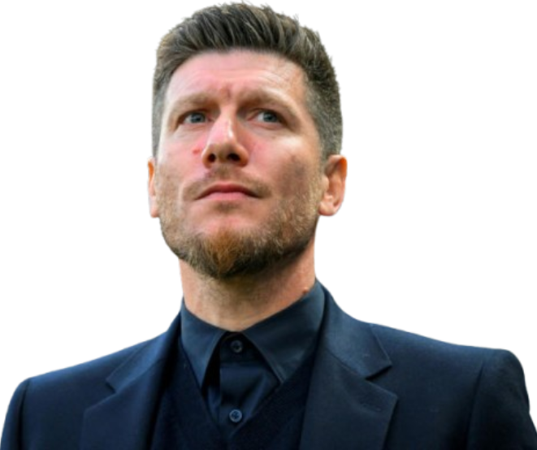
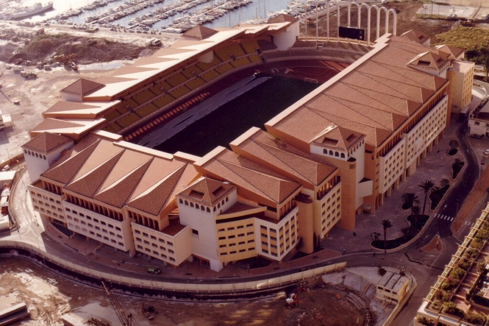

Treinador: Sébastien Pocognoli
Sébastien Pocognoli é um treinador belga que rapidamente se destacou no mundo do futebol após uma carreira sólida como jogador profissional.

Estádio: Stade Louis II
O Stade Louis II é uma das arenas mais singulares do mundo, não apenas pela sua arquitetura, mas pela engenharia necessária para o edificar no apertado espaço do Principado.

Estilo de Jogo:
O estilo de jogo que Sébastien Pocognoli utiliza no AS Monaco baseia-se numa filosofia moderna, herdada do seu sucesso anterior no Royale Union Saint-Gilloise.
"Nosce te ipsum!"